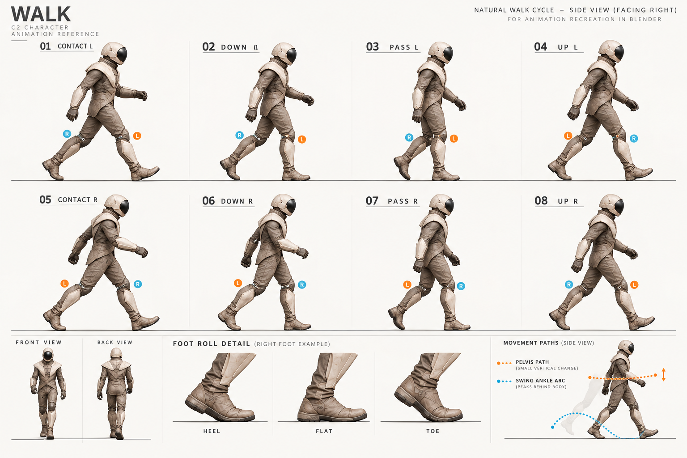

本轮两张内置 imagegen 原图保留。彩框与下方相位表是人工审查索引，不是第三张生成图。整周期仍未通过，缺失关键姿势等待获准补图。

右半周期由左半周期推导：时间加0.5，交换骨骼L/R并反射身体横向坐标；角色前进方向保持相同。不能仅交换图中文字，也不能把整个人物水平翻转成倒走。
| 动作／相位 | 支撑与摆动关系 | 新图来源与缺口 |
|---|---|---|
| walk 0.00 / 0.50 | 左／右前脚跟接触，另一脚后方前掌支撑 | 采用walk 01的脚跟接触剪影；05作为反侧轮廓参考。脚跟放大细节缺失。 |
| walk 0.10 / 0.60 | 前脚承重屈膝、全掌加载，后跟抬起 | 采用walk 02／06局部姿态。 |
| walk 0.25 / 0.75 | 支撑腿经过身体下方；对侧鞋低位经过支撑踝 | 缺少准确图。排除03／07，不照错制作。 |
| walk 0.40 / 0.90 | 支撑脚跟升起、前掌滚动；对侧鞋低位前送 | TOE细节可用；全身UP面板不足，需要准确经过姿态支持过渡。 |
| run 0.00 / 0.50 | 软膝着地，另一腿在身后收跟 | 采用RUN 1与SOFT LANDING细节；反侧由明确L/R交换生成，拒绝印刷后半周期作为顺序。 |
| run 0.08 / 0.58 | 承重腿缓冲；对侧腿经过 | RUN 2只采用支撑缓冲，摆动腿经过需单独校正。 |
| run 0.18 / 0.68 | 后脚尖推离、对侧屈膝前送 | RUN 3局部姿态；手臂与前送腿相反。 |
| run 0.30 / 0.80 | 双脚离地，后腿收跟，前脚以软膝准备落地 | RUN 4离地意图和REAR HEEL RECOVERY细节；5–8不作整段顺序。 |
| sprint | 同样交替承重／推离／腾空，增加躯干前倾与身后收跟 | 仅采用SPRINT 1的前倾／推离轮廓；缺准确收腿、经过、着地／腾空的完整关系，不能重复一帧凑周期。 |
产品GLB/驱动在概念审核期间保持R4版本。原图与实际提示词：concept-walk-r5.png / prompt-walk.txt；concept-run-sprint-r5.png / prompt-run-sprint.txt。未经新授权不增加生成调用。